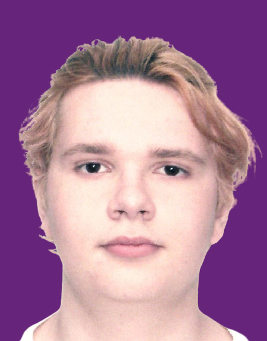

Авторство сайта принадлежит Мартихину Ивану Андреивичу ИЦТМС ИСТАС 3-4

Левый фрейм - меню навигации по программам и разделам.
Верхнее меню - для навигации по обоснованию и выбору ОС, файловой системы и диску.
Скачать презентацию о 34 разделе